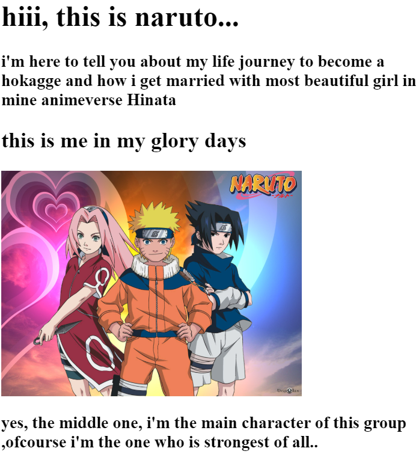
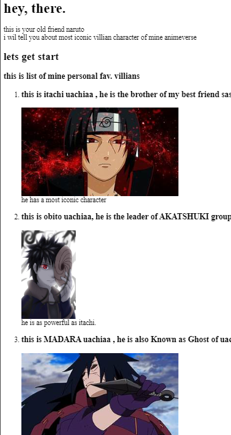

Naruto portfolio
this is a portfolio telling about the
journey of naruto , how he become a hokage
Naruto's parents were incredibly talented fighters for the Land of Fire, and his mother Kushina contained powers that were beyond even the most gifted ninjas. Her immense reserve of chakra allowed her to be a rare carrier of a demon spirit called a Nine-Tailed Fox. These beasts were sealed inside humans who could control them, giving them incredible powers while also making them responsible for containing the monster.
Read more
To know more about me go to pic given below...

To know with whom i have to fight in mine journey then click on the pic given below

LNaruto's mother was attacked by the leader of a renegade ninja group when she was most vulnerable: during the birth of her son. The attacker was able to unseal Kushina's beast, and the resulting rampage destroyed the Uzumakis' home village. Both of Naruto's parents were killed in the fight, with his father sacrificing himself to stop the beast's destruction. In the process, he sealed a portion of the beast inside his infant son.
The orphaned Naruto containing this power at such a young age, and that power coming from a beast that destroyed his village, made him an outcast even as the village looked after his well-being.
Brash and unsocialized, Naruto makes himself a bit of a nuisance if only to get people to look at him. He pulls pranks on the local villagers and frequently offends his elders for a break from the typical wide berth that people who know his origin give him. The village is largely happy to him leave when he's sent off to have his talents crafted at ninja academy.
read more.... .